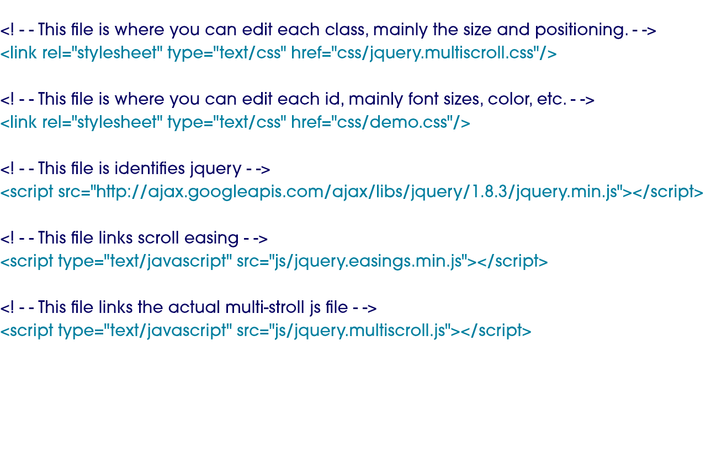

Multi-Scroll
HTML Markup
divs on divs on divs
You can add as many sections as you want, just as long as it has a class of "ms-section" and the proper id.

Function Needed
Here you can quickly change the background color of each section. You must add another anchor to add a new section
This function goes at the bottom of your HTML file, under the other script files but above the main scripts.js.